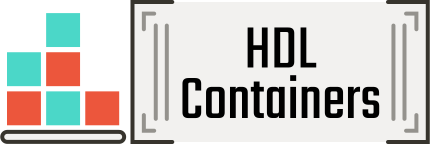

HDL Containers¶



This repository contains scripts and recipes for building, testing and deploying OCI images (aka Docker | Podman images) including open source Electronic Design Automation (EDA) tooling. All the images are pushed to gcr.io/hdl-containers, and mirrored to ghcr.io/hdl and hub.docker.com/u/hdlc: